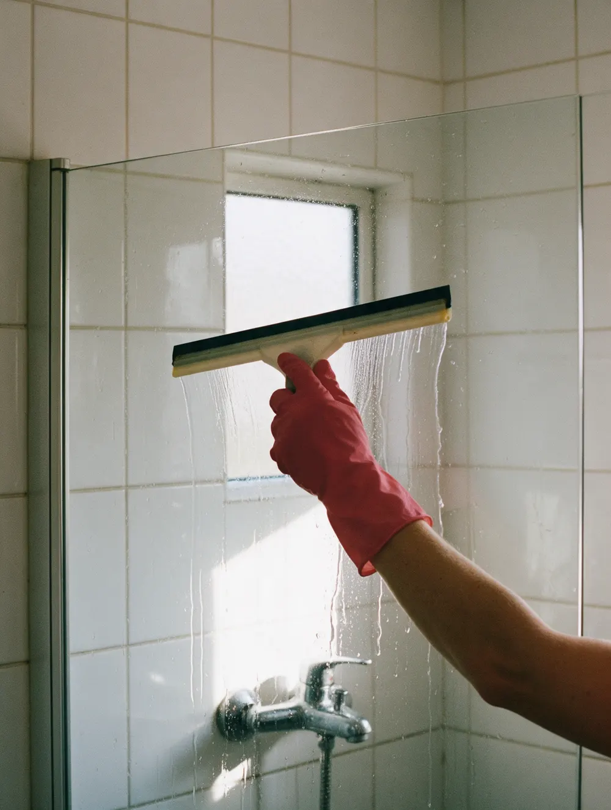
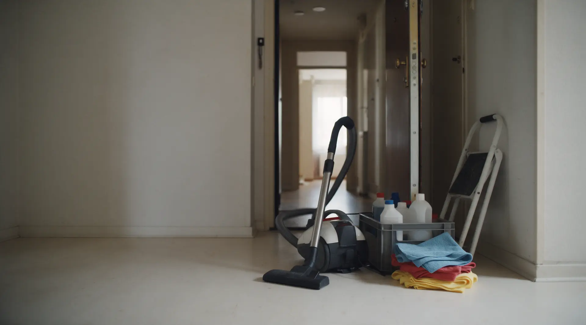

Клининг · Казань
Уборка на Гагарина: со своей химией и техникой
Уборка по чек-листу: пыль, полы, санузел, кухня. Если что-то не понравилось, вернёмся бесплатно.

- Цена по метражу – до приезда
- Приезжаем к своему времени
- Своя химия и оборудование
Цена по метражу – до приезда
Назовите площадь квартиры и вид уборки – получите сумму, а не «зависит от площади». Своя химия и оборудование в цене.
За м² площади
- Поддерживающаяоткрытые поверхности, сантехника, полы, мусор100 ₽ за м²
- Генеральнаяшкафы и техника внутри, пыль на высоте, окна изнутри, налёт200 ₽ за м²
- После ремонтастроительная пыль, следы краски и клея, плёнка с окон280 ₽ за м²
Минимум за квартиру
- Поддерживающаяот 3 500 ₽
- Генеральнаяот 7 000 ₽
- После ремонтаот 9 000 ₽
Цены ориентировочные, средние по нише. В боевом сайте поставим ваши и уберём эту пометку.
Как проходит
- 01
Заявка
Пишете метраж, вид уборки и адрес – отвечаем суммой и свободными датами.
- 02
Подтверждение
Накануне сообщаем, во сколько приедем и кто, и присылаем акт с пунктами.
- 03
Приезд
К своему времени, со своей химией и оборудованием.
- 04
Приёмка
Проходите по акту вместе с клинером, оплата после приёмки.


Что обещаем
Цена известна до приезда
Никаких «приедем, посмотрим».
Пункт не принят – доделываем до ухода
Принимаете по тому же акту, что пришёл в подтверждении.
Оплата после приёмки
А не «переведите заранее».
Клинер по договору с нами
За работу отвечает компания, ключи – по акту передачи.
Отзывы с Google Карт
«Очень приятная девушка. Вовремя приехала, была вежлива. Убралась достаточно быстро и очень качественно. В комнате после уборки пахнет чистотой. 100% рекомендую.»
Кира Мясникова · 6 месяцев назад
«Пришла домой, так чисто, уютно, все блестит 🫶🏻 когда увидела что даже полки в ванной протерли, где куча разных мелочей, у меня чуть слезы радости не пошли 🥹 очень ответственные, буду звать теперь только мастеров из енота»
Зарина Бадыкшанова · 2 года назад
«Если вы еще не определились с выбором клининговой службы, то от всей души рекомендую эту. Осталась в восторге от начала, до конца. Позвонив сюда, вас с удовольствием проконсультируют и сориентируют по ценам прямо онлайн. Работу…»
Камилла Назырова · 2 года назад
Отзывы с карточки на Google Картах, без правок.
Контакты
- Адрес
- ул. Гагарина, 43, Казань
- Часы
- по записи
- Телефон
- 8 (999) 162-68-92